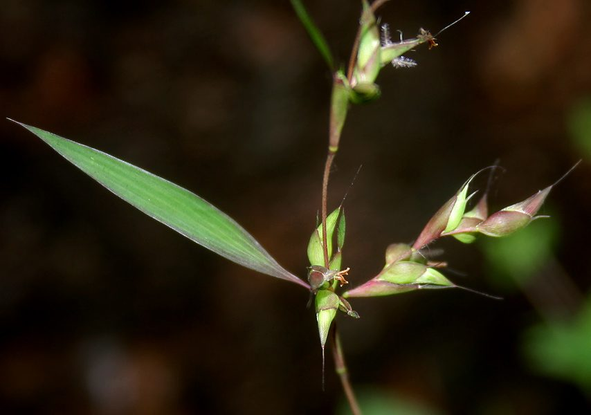

भंजुरीMauritian Grass
Apluda mutica · Poaceae · FLR-0256

- Scientific name वैज्ञानिक नाम
- Apluda mutica L.
- Family कुल
- Poaceae
- Hindi हिंदी
- भंजुरी
- Local names स्थानीय नाम
- bhanjuri, bhanjur, mauritian grass, apluda
- Status here यहाँ की स्थिति
- native
- Movement आवागमन
- Resident, here all year
- Known from कहाँ दर्ज
- Others have published records from the wider Awadh–Purvanchal plain, none yet from Basti–Ayodhya अवध–पूर्वांचल से दूसरों के प्रकाशित अभिलेख, बस्ती–अयोध्या से अभी नहीं
- IUCN IUCN
- not evaluated
- Review समीक्षा
- audited and independently read
When to look कब देखें
Expected mainly in June, July, August, September, October, November. मुख्यतः जून, जुलाई, अगस्त, सितंबर, अक्टूबर, नवंबर में अपेक्षित।
Uses and possibilities उपयोग और संभावनाएँ
Drawn from the documented uses in the profile below, where each is labelled traditional, current or a research lead. All uses →
Tell it apart from इनसे अलग पहचानें
भंजुरी / Mauritian Grass
Apluda mutica L. — Poaceae
भंजुरी — पूर्वी उत्तर प्रदेश के खेतों और चरागाहों की एक सामान्य घास जो मानसून के समय तेजी से बढ़ती है। इसका पत्ता नरम और रसीला होता है, जिसे गाय-भैंस पसंद करते हैं। बारिश के बाद खाली पड़ी जमीन पर सबसे पहले यह घास उगती है।
Quick Identification त्वरित पहचान
| Feature | Description |
|---|---|
| Height | 30–60 cm tall annual or short-lived perennial grass |
| Growth | Tufted, spreading base; leaves branching upward |
| Leaves | Linear, 15–25 cm long, 3–6 mm wide; grey-green; slightly hairy |
| Inflorescence | Panicle with few, distant spikelets; 10–20 cm long |
| Spikelets | Black-fringed or brown-fringed, on short pedicels |
| The test | Clumpy grass with black-edged spikelets; leaves soft when young |
Field tip: Look for a tufted grass of medium height with soft leaves and a loose panicle with distinctive black-fringed spikelets, appearing in open grasslands during and after the monsoon.
Morphology आकारिकी
Biometrics (typical measurements in the Gangetic plain):
| Measurement | Range |
|---|---|
| Plant height | 30–60 cm |
| Leaf length | 15–25 cm |
| Leaf width | 3–6 mm |
| Panicle length | 10–20 cm |
Stems: Tufted, erect, with several nodes; greenish.
Leaves: Linear, acute, with prominent parallel veins. Leaf sheaths are open and glabrous or sparsely hairy.
Inflorescence: A panicle with 3–6 distant spikelets on elongated pedicels. The spikelets are characteristic: brownish-green with distinct black or dark brown margins (giving the "black-fringed" appearance).
Spikelets: Two-flowered; the lower flower is male or neuter, the upper is bisexual.
हिंदी: पत्ता नरम, हरा-भूरा। फूल — काले किनारों वाले दाने। बारिश में निकलता है।
Behaviour & Ecology व्यवहार और पारिस्थितिकता
Apluda mutica is a warm-season grass, native to tropical Asia. It grows rapidly during the monsoon and persists into the early dry season, then dies back. It is often the first grass to establish on disturbed ground, making it a useful pioneer species for pasture restoration. Its soft leaves and nutritious shoots make it preferred grazing for cattle and buffalo.
हिंदी: मानसून में तेजी से बढ़ता है। सबसे पहले खाली जमीन पर उगता है। पशुओं को बहुत पसंद है।
Life Cycle / Phenology जीवन चक्र
| Month / season | Event |
|---|---|
| June | Germination and rapid growth with monsoon onset |
| July–August | Vegetative growth; leaves tender and nutritious |
| September–October | Flowering; panicles emerge |
| November | Seed maturation and dispersal |
| December–May | Dormancy; plant dies back |
Reproduces from seed; does not persist as a perennial in most years.
हिंदी: जून में उगता है। अगस्त-सितंबर में फूल। नवंबर-दिसंबर में पूरी तरह सूख जाता है।
Associated Species / Interactions संबंधित प्रजातियाँ
- Grazing animals: Preferred forage for cattle and buffalo.
- Seed dispersal: Wind and water dispersal of seeds.
Pests and Diseases कीट और रोग
- Generally disease-free; no major pests reported.
Agricultural / Human Relevance कृषि प्रासंगिकता
Fodder: The soft green leaves and shoots are grazed directly by cattle and buffalo during the monsoon and early winter. The grass is nutritious and palatable, making it valuable for pasture.
Pasture restoration: Because it establishes rapidly on disturbed or degraded pasture, it is sometimes used to rehabilitate overgrazed areas.
Hay: Can be cut and dried for winter fodder, though nutritional value declines with maturity.
हिंदी: मवेशियों के लिए अच्छा चारा — नरम पत्ता। बंजर जमीन को हरा करता है।
Expected Locally स्थानीय रूप से अपेक्षित
Not a field record. Written from published accounts for eastern Uttar Pradesh. No confirmed local sighting yet — if you have seen it, that is what the atlas needs.
अभी तक स्थानीय पुष्टि नहीं। यह विवरण प्रकाशित स्रोतों से है, किसी अवलोकन से नहीं।
Mauritian Grass is to be expected in open grasslands, field margins, and disturbed areas throughout Basti district during the monsoon and early post-monsoon season (June–November). GBIF holds published records from the wider Awadh–Purvanchal plain. The first confirmed local record would be a photograph showing the clumped growth habit and black-fringed spikelets with place and date.
Distribution वितरण
Global range: Tropical Asia, including India, Sri Lanka, and southeastern Asia.
In India: Widespread in grasslands and pasture throughout the country.
In Uttar Pradesh: Common in grassland habitats across the state.
In Basti district / eastern UP: Found in open grasslands and pasture; common but not dense stands.
Research Questions शोध प्रश्न
Anyone can investigate these | कोई भी इन प्रश्नों की जाँच कर सकता है
- How many cows or buffalo prefer to graze bhanjuri over other grasses when given a choice? — Observe grazing animals in mixed pasture.
- After how many days of monsoon rain does bhanjuri appear in an empty field? / पहली बारिश के बाद इसे उगने में कितने दिन लगते हैं? — Mark bare patches; monitor weekly.
- What is the leaf nutritional content (protein, fibre) of bhanjuri at different growth stages? — Harvest leaves at 2, 4, and 6 weeks; analyze with local agricultural lab.
- How much dry fodder can be obtained from one square meter of mature bhanjuri plants? — Harvest, dry, and weigh.
- Do the black-fringed spikelets attract insects differently than other grass species? — Compare insect visitors to bhanjuri vs. other grasses.
Similar Species मिलती-जुलती प्रजातियाँ
| Species | How to tell apart | हिंदी | |
|---|---|---|---|
| Echinochloa crus-galli ([[barnyard_millet\ | Barnyard Millet]]) | Larger spikelets; more compact inflorescence; spikelets lack black margins | दाना घास — बड़े दाने, काले किनारे नहीं |
| Crowfoot Grass (Dactyloctenium aegyptium) | Finger-like inflorescence; more robust plant | क्रो फुट — उँगली जैसी शाखाएँ |
Field rule: A medium-height tufted grass with soft leaves and a loose panicle of distinctive black-fringed spikelets is Apluda mutica.
Taxonomy & Classification वर्गीकरण
Original description. Carl Linnaeus described this species as Apluda mutica in 1759 in Species Plantarum. The genus name Apluda is derived from the Greek aplous (simple), and mutica means destitute or unarmed (referring to the lack of awns on the spikelets).
Subspecies. Monotypic — no subspecies are currently recognised.
Family and order placement. Order Poales, family Poaceae, subfamily Panicoideae.
Phylogenetic notes. Apluda is closely related to genera like Paspalum and Digitaria.
IUCN status rationale. Not evaluated. Widely distributed; no conservation concerns.
Photo Gallery फोटो गैलरी
Photos needed आवश्यक फोटो
- [ ] Whole plant in grassland (पूरी घास)
- [ ] Close view of black-fringed spikelets (काले किनारों वाले दाने)
- [ ] Leaf detail (पत्ता)
- [ ] Grazing scene with muzzuritzer grass (चरती गाय)
No photos yet — add field photos to media/species/mauritian_grass/ and run node scripts/sync_photos.js.
References संदर्भ
- Linnaeus, C. (1759). Species Plantarum, 2nd edn., Vol. 1, p. 82. Laurentii Salvii, Holmiae.
- Bor, N.L. (1960). The Grasses of Burma, Ceylon, India and Pakistan. Pergamon Press, London.
- Hooker, J.D. (1889). Flora of British India, Vol. 7. L. Reeve, London.
- Duthie, J.F. (1903). Flora of the Upper Gangetic Plain. Government Printing, Calcutta.
- Botanical Survey of India — Flora of Uttar Pradesh.
- GBIF Occurrence Data — Apluda mutica, Uttar Pradesh (2010–2025).
Source file: species/flora/grasses/mauritian_grass.md